|
|
|
In chapter 2, we have seen that a primary realizable distribution is a discrete distribution, whose constitutive element is an equipartition of the attribute distributed on a DP support. In case of the spatial distribution of the amount M from the paragraph 5.2.1, the support of an element is a 3D DP with an 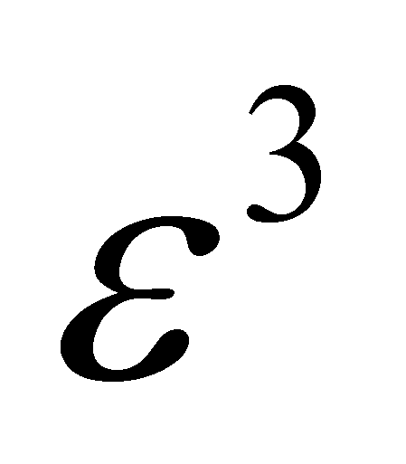 volume (a volume quantum) on which a specific value of the amount M is evenly distributed. If the amount M is cumulative, a volume quantum with the position vector23 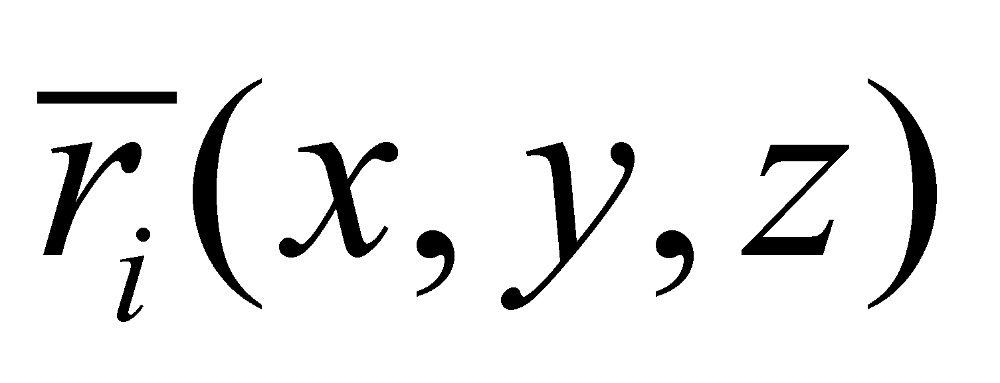shall contain a stockpile quantum:
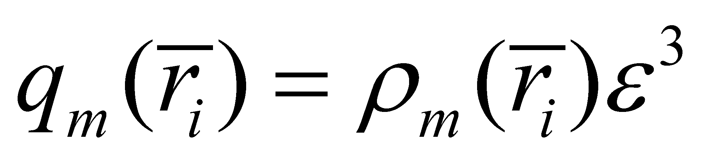 (5.2.2.2.1)
where 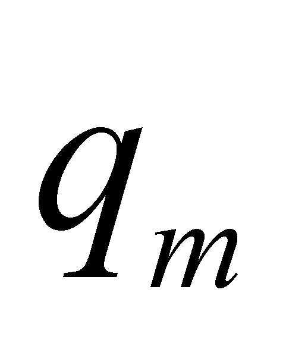is the amount of attribute M associated (assigned) to a support quantum (a 3D DP located at that position, that is the equivalent from the objectual philosophy of the material point from the classic physics), and 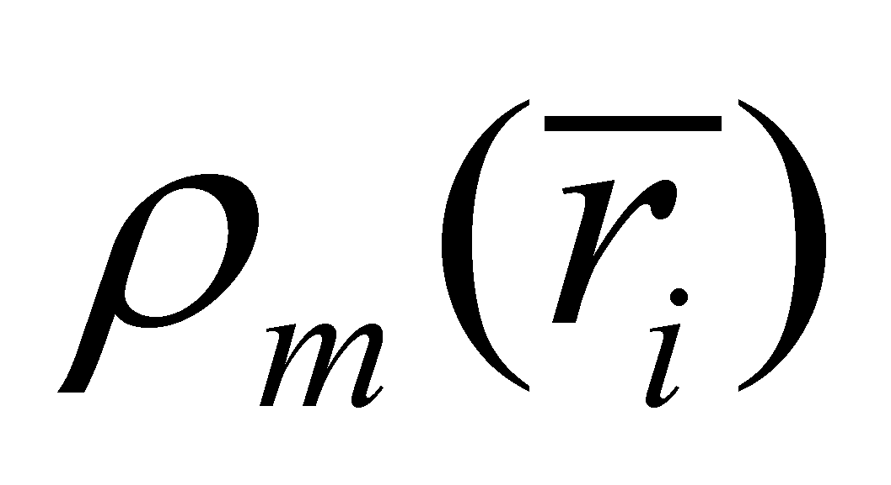is the distribution density, but also the assignment relation.
Comment 5.2.2.2.1: Attention! In this paper, the term “quantity” has a quite different meaning than the one used in the common language, denoting the value of the quantitative attribute associated to a qualitative property. According to the common language, the word “quantity” refers to the cumulative attributes (countable, integrable, extensive) on a certain domain, resulting a total quantity. According to the objectual philosophy, the word “stockpile” defines this total quantity. In case of the non-cumulative attributes, (intensive, such as the temperature, pressure, etc.) the word “value” or “amount” is being used, a quantitative quanta ε being also related to it, but it does not represent a stockpile, but only a normal numerical value. As for the intensive attributes, there is also a difference regarding the meaning of the word “density” of the distribution element. While for the extensive attributes, the density was a ratio between an elementary evenly distributed stockpile and its elementary support interval, in case of the intensive attributes, the density is only a ratio between an absolute (in case of the primary distributions) or relative (in case of the derived distributions) value, evenly distributed and the elementary support interval. The reader is invited to accept the fact that the concept of quantity in the objectual philosophy refers to the existential, quantitative attribute of a qualitative property, regardless if that property is cumulative or not. However, the attention must be maintained on the integration reasoning; it may exist a volume distribution of the temperature, but its integration does make sense only if this attribute is converted into a cumulative amount, such as the thermal energy quantity.
Because within the achievable
distribution 5.2.2.2.1, the variables x, y, z
vary gradually rather than continuously, with the amount
 ,
any interval of these variables shall contain a finite and integer
number of values such as Nx, Ny,
Nz (see annex X.3.8), resulting also a
finite and integer number of volume quanta for any spatial domain of
the distribution of amount M. As it was mentioned in annex
X.3, the number of the elements belonging to the realizable primary
distribution 5.2.2.2.1 can be very high (but not infinite as in the
case of the virtual distributions), because
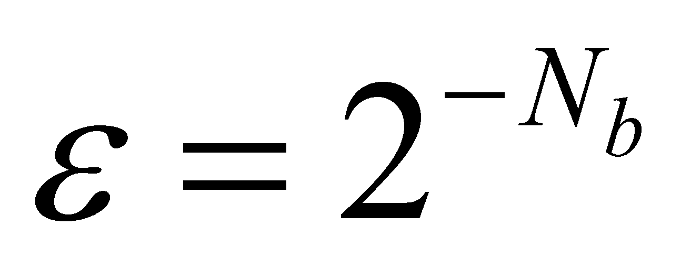
is usually very small (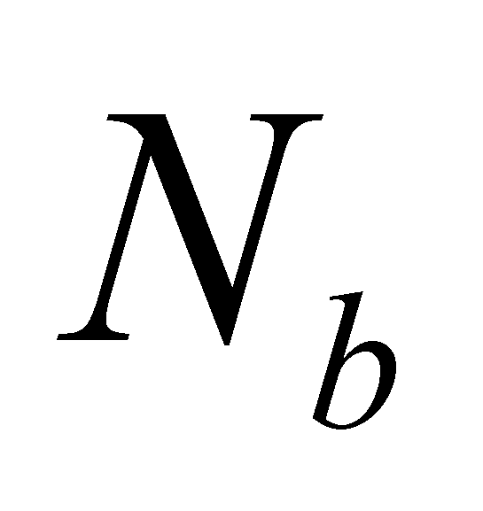is
the number of bytes used for the display of a normal numerical
value). For reducing the information amount which must be processed
and for cutting-down the time required for this processing, in case
of the distributions realizable on AIPS, the volume which includes
the spatial distribution of amount M is divided not in 3D DP,
but into volume elements dV with the sizes dx, dy,
dz, which were selected so that the inner distribution of the
amount M with the density
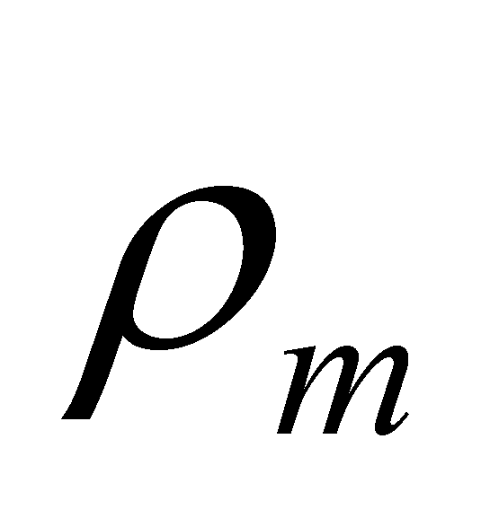can
be considered as even on this elementary unit.
,
any interval of these variables shall contain a finite and integer
number of values such as Nx, Ny,
Nz (see annex X.3.8), resulting also a
finite and integer number of volume quanta for any spatial domain of
the distribution of amount M. As it was mentioned in annex
X.3, the number of the elements belonging to the realizable primary
distribution 5.2.2.2.1 can be very high (but not infinite as in the
case of the virtual distributions), because
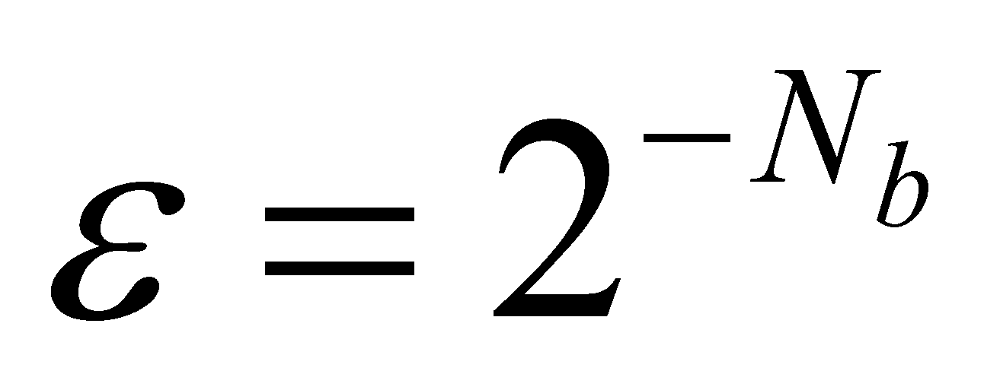
is usually very small (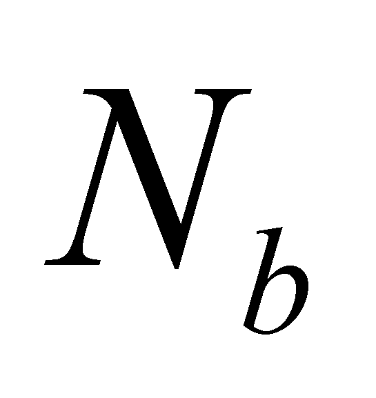is
the number of bytes used for the display of a normal numerical
value). For reducing the information amount which must be processed
and for cutting-down the time required for this processing, in case
of the distributions realizable on AIPS, the volume which includes
the spatial distribution of amount M is divided not in 3D DP,
but into volume elements dV with the sizes dx, dy,
dz, which were selected so that the inner distribution of the
amount M with the density
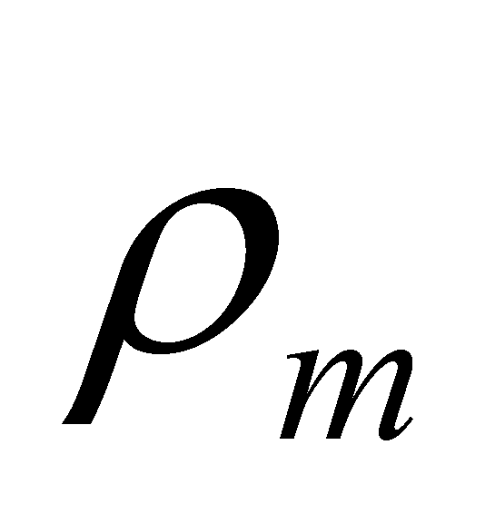can
be considered as even on this elementary unit.
Comment 5.2.2.2.2: Besides the amount of the inner domain, another major difference between the volume quanta and the volume element is represented by the composition of the inner reference system of the two elementary objects. In case of the volume element dV, we have seen that it has both a T reference and a R reference made-up from the directions X,Y,Z of the three segments dx, dy, dz. In case of the volume quanta qV, the inner reference is made-up only from T reference, the rotations being totally non-determined for this kind of object, just as in case of the dimensionless point.
Under these circumstances, we may write (only for a cumulative attribute):
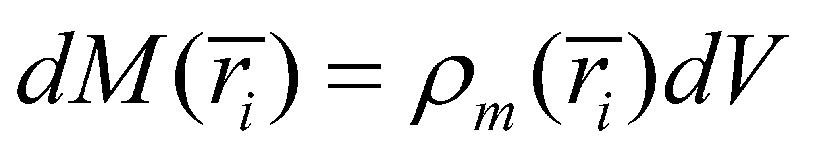 (5.2.2.2.2)
Where 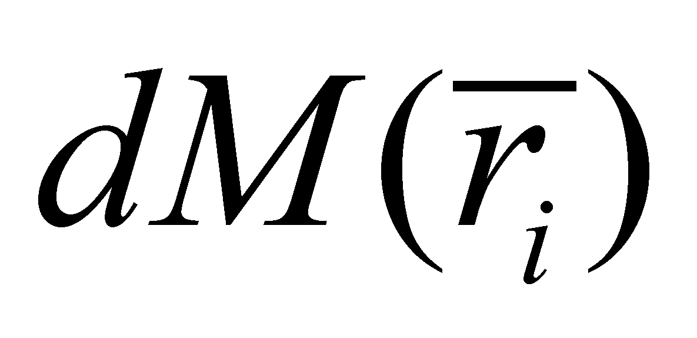 is the stockpile from the amount M assigned to the elementary volume dV, placed on that spatial position.
Attention! In this paper, both the elementary volume and the volume quanta are objects with an inner RS, and T reference (origin) of this inner RS is the one who has assigned the position , defined against the inner RS of the distribution (as compound object), and inner distribution’s RS position is defined against an outer RS (an absolute one). According to the relations 5.2.2.2.1 and 5.2.2.2.2, the position vector 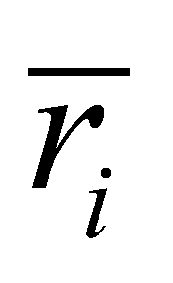 of each element is defined against this inner RS of the distribution (with its components T and R). When the distribution starts to move against an outer reference (for instance, an absolute reference), the variable attribute shall be 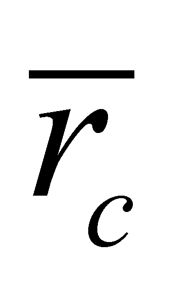, the position vector of the inner T reference of the distribution, against the outer T reference, and once with it, the positions of all the distribution elements shall become variable. If there are S-type relations (which shall be defined in the following chapter) deployed between the distribution elements, an overall motion of the inner R reference against the outer R reference may also occur.
The relation 5.2.2.2.2 is identical from the point of view of its form with the relations from the current scientific papers depicting spatial distributions of some amounts, (and in which the expression with “surrounded” point by the volume element is being used), but its meaning is the above-mentioned one. The distribution 5.2.2.2.2 is also a primary spatial distribution of the amount M, but with a higher approximation degree and requiring a less calculus volume as compared to the distribution 5.2.2.2.1.
At the moment when the distribution of the amount M which was initially static, begins to move as a whole, the spatial position of the inner T reference of the distribution becomes variable and once with it, the positions of each distribution element become variable as well. All of these variations are time dependent.
Comment 5.2.2.2.3: This additional variable - that is the time - is approached in the present paper just as any other realizable variable, which means that a temporal quantum(a temporal DP) shall be assigned to it and also an elementary interval dt (see annex X.3 for the relation between the two elements types). In case of the temporal attribute, the difference between these two elements consist not only in their amount, but also in each specific utilization. The temporal DP quantum of amount 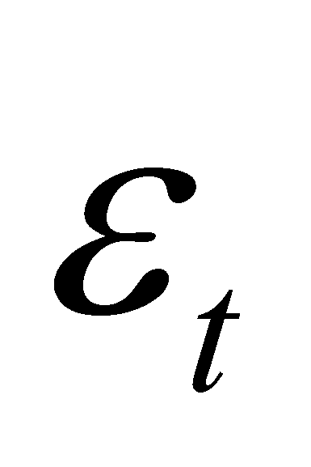 with the inner t reference is the support of an element of temporal primary distribution (a state S0(t)), while dt element (with an inner asymptotic reference at t moment) is the support of a temporal derived distribution (a state Sx(t), x=1…n).
23 Attention! We are talking about the inner position vector determined in relation to the distribution’s inner reference
Copyright © 2006-2011 Aurel Rusu. All rights reserved.